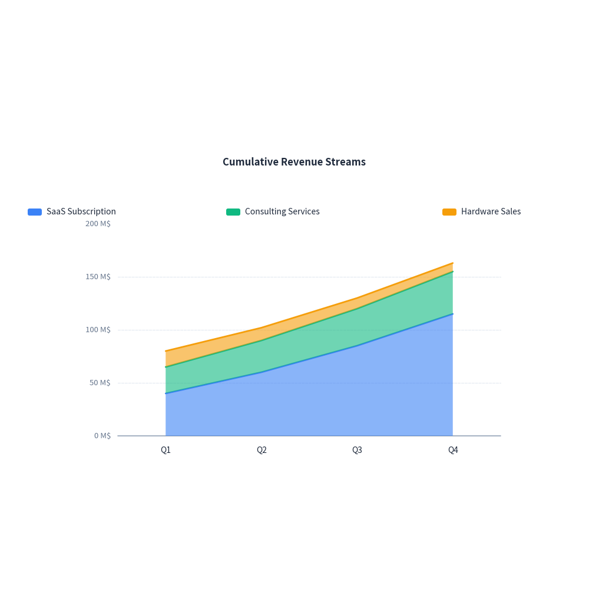
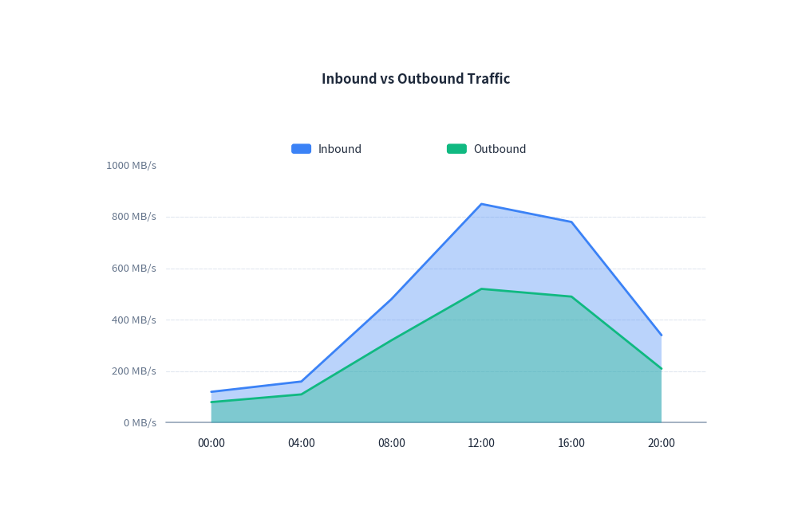

Area Chart Guide
drawlib.charts.AreaChart provides volume and trend visualization through filled polygons, supporting both overlapping semi-transparent layers and cumulative stacked areas.
1. Stacked Area Chart
Cumulative stacked areas are ideal for showing how multiple segments contribute to an overall total over time:
from drawlib import canvas
from drawlib.charts import AreaChart
canvas.initialize()
chart = AreaChart(
categories=["Q1", "Q2", "Q3", "Q4"],
width=80,
height=55,
title="Cumulative Revenue Streams",
mode="stack",
fill_alpha=0.6,
)
chart.add_series("SaaS Subscription", [40.0, 60.0, 85.0, 115.0])
chart.add_series("Consulting Services", [25.0, 30.0, 35.0, 40.0])
chart.add_series("Hardware Sales", [15.0, 12.0, 10.0, 8.0])
chart.configure_y_axis(unit="M$", show_grid=True)
chart.draw(xy=(10.0, 20.0))

2. Overlapping Area Chart
Overlapping areas with transparency allow comparing multiple independent magnitude distributions simultaneously:
from drawlib import canvas
from drawlib.charts import AreaChart
canvas.initialize()
chart = AreaChart(
categories=["00:00", "04:00", "08:00", "12:00", "16:00", "20:00"],
width=80,
height=55,
title="Inbound vs Outbound Traffic",
mode="overlap",
fill_alpha=0.35,
)
chart.add_series("Inbound", [120.0, 160.0, 480.0, 850.0, 780.0, 340.0])
chart.add_series("Outbound", [80.0, 110.0, 320.0, 520.0, 490.0, 210.0])
chart.configure_y_axis(unit="MB/s", show_grid=True)
chart.draw(xy=(10.0, 20.0))

3. API Reference
AreaChart
| Parameter | Type | Default | Description |
|---|---|---|---|
categories |
list[str] |
Required | Category labels along horizontal axis. |
width |
float |
80.0 |
Chart bounding width. |
height |
float |
50.0 |
Chart bounding height. |
title |
str |
"" |
Chart title displayed at the top. |
mode |
"overlap" | "stack" |
"overlap" |
Area composition mode. |
fill_alpha |
float |
0.35 |
Transparency of area fill polygons (0.0 to 1.0). |
show_points |
bool |
False |
Whether to render markers along top boundary. |
point_shape |
"circle" | "square" | "none" |
"none" |
Shape of point markers. |
point_size |
float |
0.7 |
Size of point markers. |
legend_position |
"auto" | "top" | "bottom" | "right" | "none" |
"auto" |
Position of legend box. |
show_values |
bool |
False |
Whether to display values above markers. |
Methods
add_series(name: str, values: list[float], color=None, style=None, fill_alpha=None, line_width=2.0, line_style="solid", point_shape=None, point_size=None) -> AreaSeriesconfigure_y_axis(...) -> Axisconfigure_x_axis(...) -> Axisdraw(xy: tuple[float, float] = (0.0, 0.0)) -> None